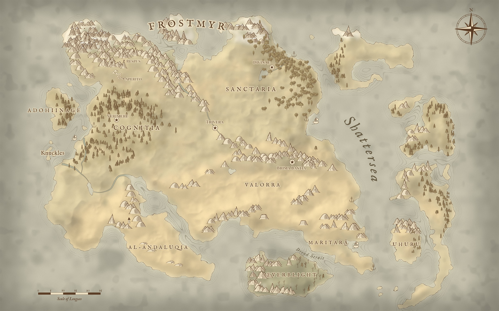
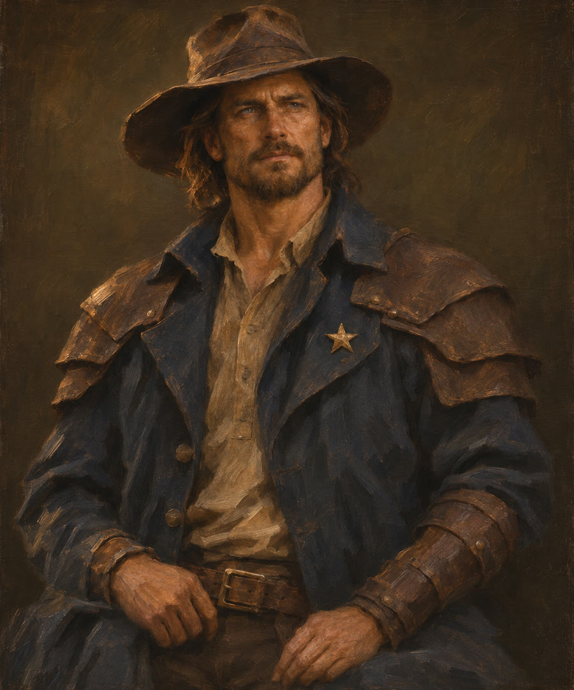
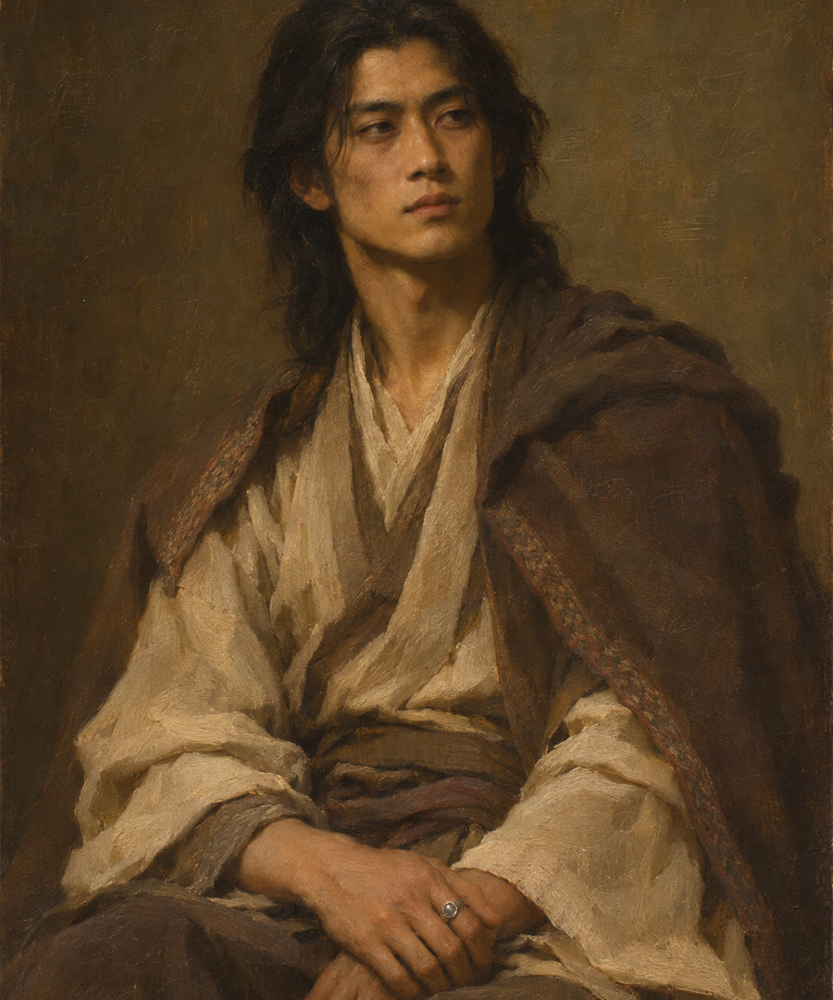
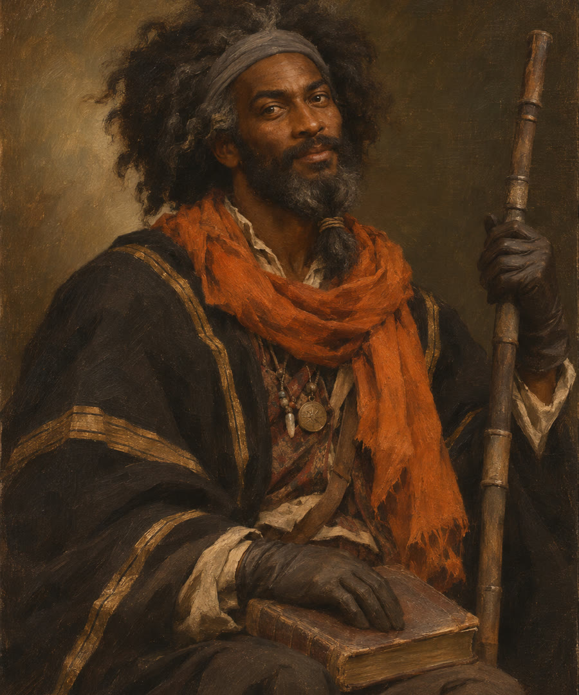
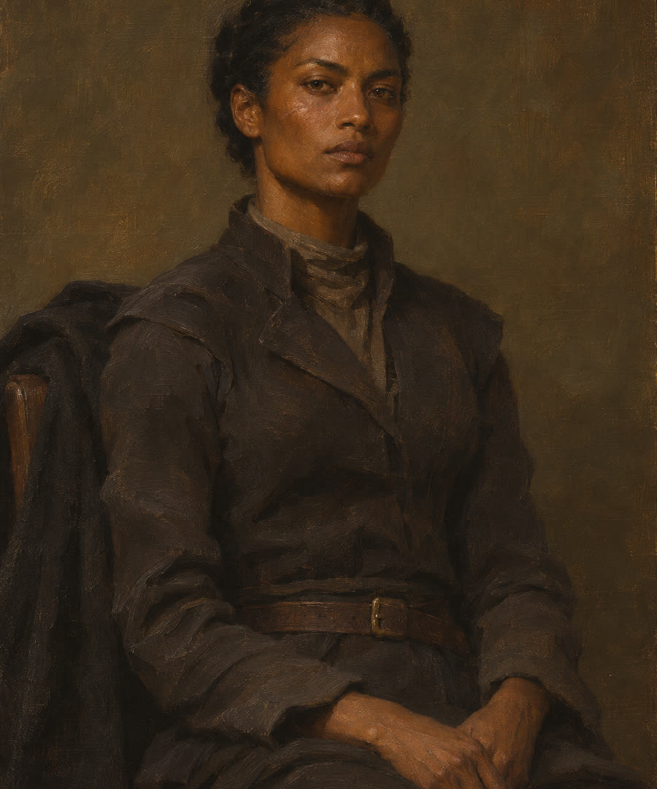

The atlas grows with each volume. Choose an era, then a book, to reveal only the places, people, and discoveries known at that point in the story.
Now exploring Era One · Book One · The Mercy of Ruin
01
The known world
A continent under pressure.
Select a marked location to open its field note. Use the controls to examine the original map from The Mercy of Ruin.
Eladria, recorded era

02
Traveling company
Meet the people on the road.
Five lives enter the story from different edges of Eladria. None will leave it unchanged.
01

The former Sentinel
Jovan Ga'al
A former Valorran Marine and Triveran lawman who has learned exactly how much justice can cost. Zion's Vale gives him one more choice to make.
He knows how institutions fail—and what remains when they do.
Valorra · Anger / Trust
02

The Dreamer
Eazra Horama
A scholar of visions raised in the secluded Dreamer's Oasis. A shared darkness calls him beyond the only world he has known.
He can read what the future feels like. Understanding it is harder.
The Oasis · Fear / Wonder
03
The Ranger
Rhyse Zetema
A Valorran Ranger with an easy manner, a sharp eye, and a trail of questions leading toward something larger than frontier crime.
He wears humor lightly and duty like an old scar.
Valorra · Trust / Anticipation
04

The historian
Lorcan
A widely traveled scholar whose medallions and languages hint at a life spent gathering more than knowledge.
Every ruin is a record. Every record leaves something out.
The road · Curiosity / Grief
05

The returned soldier
Sela
Lorcan's Uhuran half-sister, a soldier declared dead after her company vanished near the Nomadic Wastes. Seven years later, the frontier has not finished with her.
Official records call her dead. Sela has learned not to trust official records.
Uhuru · Survival / Loyalty
03
The archive cabinet
Objects remember.
In Eladria, power rarely stays abstract. It becomes crystal, steel, inheritance—and evidence.
W
Emonantic crystal
Wellstone
Feeling, held.
Crystal capable of storing a single emotional current. It lights lamps, powers engines, serves as currency, and carries a more dangerous purpose inside a charge.
Known use
Power, trade, weaponry
Archive status
Common / regulated
04
Wellstone attunement
Which current answers you?
Six choices. Eight emotional currents. Let the wellstone reveal the Emonari branch that most closely matches how you meet the world.
Uncharged
The test begins
A current cannot be chosen. Only recognized.
There are no wrong answers. Choose the response that feels most instinctive, not the one that sounds most heroic.
Question 1 of 6
The road divides
The stone answers
Your Emonari branch is
The map is only the beginning
Walk into the story.
The Mercy of Ruin · Book One of The Eightfold Covenant